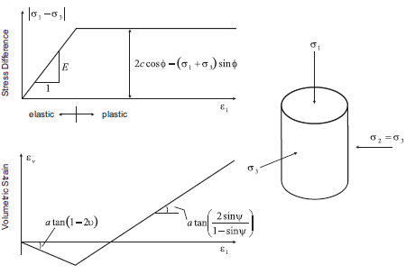
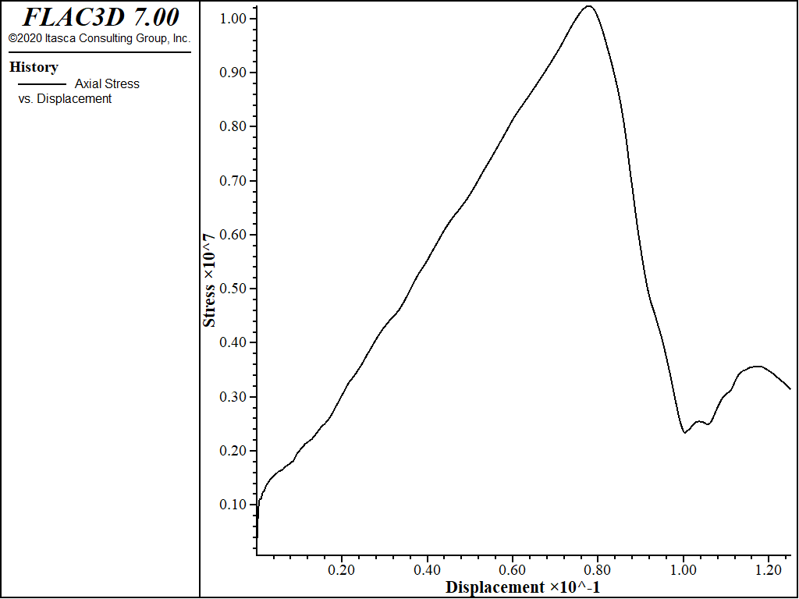
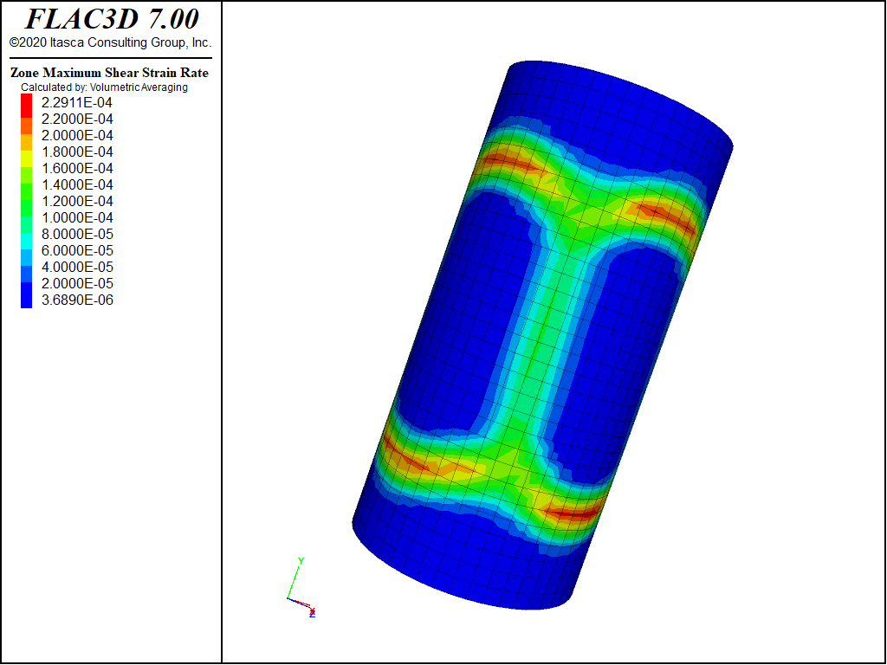
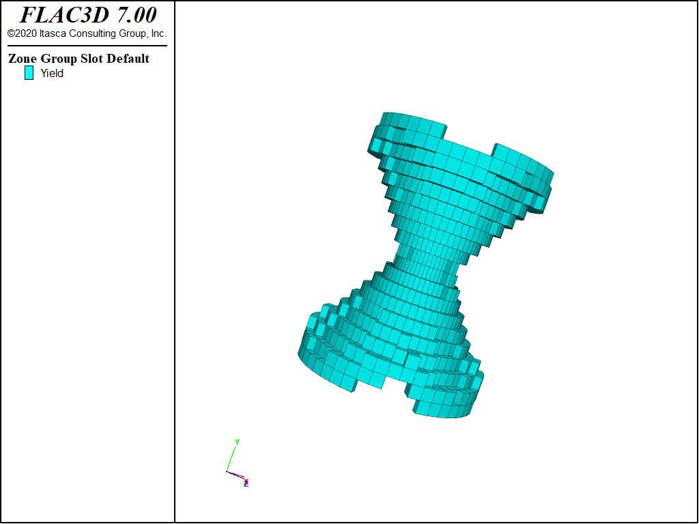
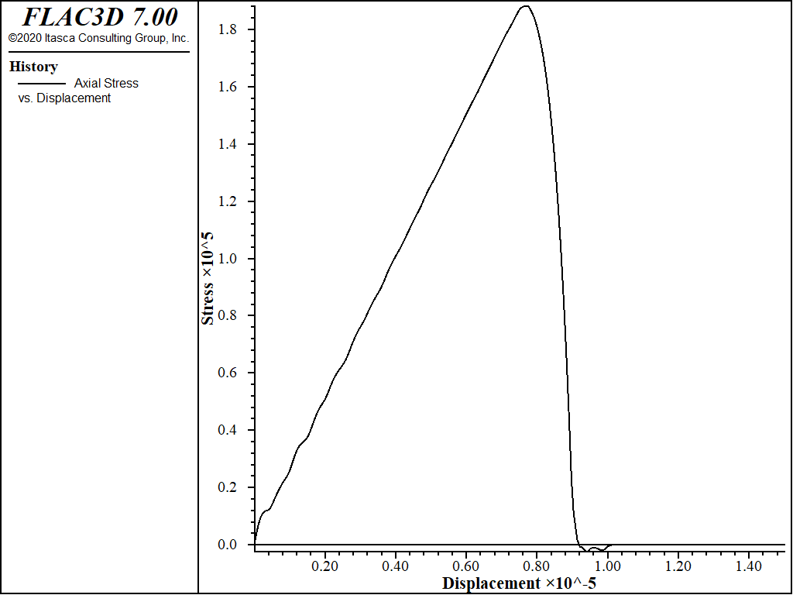
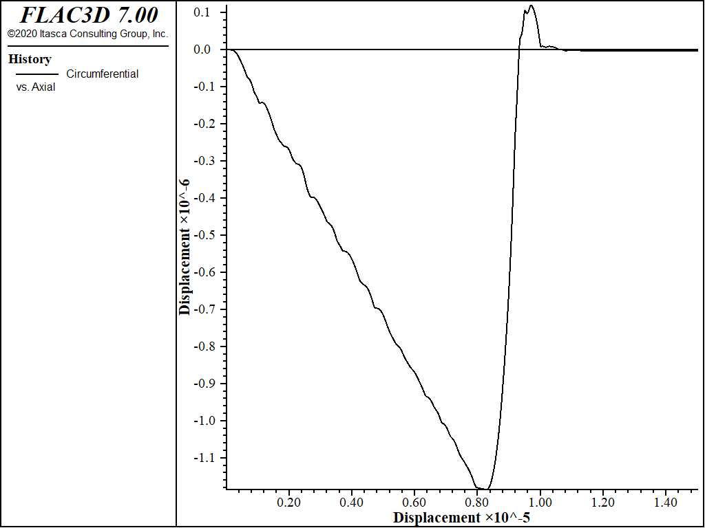
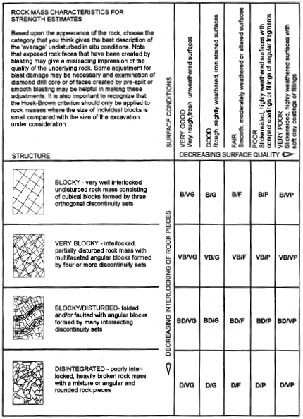

材料属性
FLAC3D 所需材料性质通常分为两组之一：弹性变形性质和强度性质。本节概述变形与强度性质，并给出针对指定模型选择适当性质的指导原则。此外，还需特别考虑破坏后性质的定义、将实验室测得性质外推至现场尺度、性质的空间变化及分布随机性，以及性质对围压和应变的依赖等。本节也将讨论这些主题。
由于性质数据库存在高度不确定性，选择性质往往是建立模型最困难的环节。进行分析时，尤其是地质力学分析，应牢记问题始终涉及数据有限的系统：现场数据永远无法完全掌握。不过，根据现有数据库适当选择性质，仍可获得对物理问题的重要认识。前文建模方法（Modeling Methodology）讨论了这种建模思路。
材料性质通常通过实验室试验方案获得。以下各节介绍内在性质（实验室尺度），并列出各种岩石和土的常见数值。
固有变形属性
各向同性弹性性质——FLAC3D 中除横观各向同性弹性模型和正交各向异性弹性模型外，所有材料模型均假定材料在弹性范围内具有各向同性行为，由体积模量（\(K\)）和剪切模量（\(G\)）两个弹性常数描述。相较于杨氏模量 \(E\) 和泊松比 \(ν\)，更推荐采用弹性常数 \(K\) 和 \(G\)。虽然两组常数均可用于 FLAC3D，但体积模量和剪切模量被认为比杨氏模量和泊松比更能反映材料行为的基本方面。（关于采用（\(K,G\)）而非（\(E,ν\)）的理由，见技巧与建议（Tips and Advice）主题中的技巧13. 使用体积模量和剪切模量（13. Use Bulk and Shear Moduli）。）
从（\(E,ν\)）转换到（\(K,G\)）的方程为
当 \(ν\) 接近 0.5 时，应谨慎使用上述方程，因为计算出的 \(K\) 会高得不切实际，求解收敛非常缓慢。更好的方法是将 \(K\) 固定为其已知物理值（通过各向同性压密试验或 \(p\) 波速估计），再根据 \(K\) 和 \(ν\) 计算 \(G\)。
下表汇总了一些选定岩石的典型弹性常数值，再下一表列出一些选定土体的典型值。
| 干密度（kg/m 3） | \(E\) (GPa) | \(ν\) | \(K\) (GPa) | \(G\) (GPa) | |
|---|---|---|---|---|---|
| 砂岩 | 19.3 | 0.38 | 26.8 | 7.0 | |
| 粉砂岩 | 26.3 | 0.22 | 15.6 | 10.8 | |
| 石灰岩 | 2090 | 28.5 | 0.29 | 22.6 | 11.1 |
| 页岩 | 2210 - 2570 | 11.1 | 0.29 | 8.8 | 4.3 |
| 大理岩 | 2700 | 55.8 | 0.25 | 37.2 | 22.3 |
| 花岗岩 | 73.8 | 0.22 | 43.9 | 30.2 |
| 干密度（kg/m 3） | 弹性模量 \(E\)（MPa） | 泊松比 | |
|---|---|---|---|
| 松散均匀砂 | 1470 | 10 - 26 | 0.2 - 0.4 |
| 密实均匀砂 | 1840 | 34 - 69 | 0.3 - 0.45 |
| 松散棱角状粉砂质砂 | 1630 | ||
| 密实棱角状粉砂质砂 | 1940 | 0.2 - 0.4 | |
| 硬黏土 | 1730 | 6 - 14 | 0.2 - 0.5 |
| 软黏土 | 1170 - 1490 | 2 - 3 | 0.15 - 0.25 |
| 黄土 | 1380 | ||
| 软有机质黏土 | 610 - 820 | ||
| 冰碛土 | 2150 |
各向异性弹性性质——对于弹性各向异性的特殊情况，横观各向同性弹性模型需要五个弹性常数：\(E_1\)、\(E_3\)、\(\nu_{12}\)、\(\nu_{13}\) 和 \(G_{13}\)；正交各向异性弹性模型需要九个弹性常数：\(E_1\)、\(E_2\)、\(E_3\)、\(\nu_{12}\)、\(\nu_{13}\)、\(\nu_{23}\)、\(G_{12}\)、\(G_{13}\) 和 \(G_{23}\)。这些常数的定义见正交各向异性弹性模型（Orthotropic Elastic Model）。
横观各向同性弹性行为通常与节理或层理均匀发育的岩体有关。一些研究者已根据内在各向同性弹性性质、节理刚度和间距参数，建立弹性常数的表达式。下表简要汇总了各向异性岩石的典型数值。
| 岩石 | \(E_x\) (GPa) | \(E_y\) (GPa) | \(ν_{yx}\) | \(ν_{zx}\) | \(G_{xy}\) (GPa) |
|---|---|---|---|---|---|
| 粉砂岩 | 43.0 | 40.0 | 0.28 | 0.17 | 17.0 |
| 砂岩 | 15.7 | 9.6 | 0.28 | 0.21 | 5.2 |
| 石灰岩 | 39.8 | 36.0 | 0.18 | 0.25 | 14.5 |
| 灰色花岗岩 | 66.8 | 49.5 | 0.17 | 0.21 | 25.3 |
| 大理岩 | 68.6 | 50.2 | 0.06 | 0.22 | 26.6 |
| 砂质页岩 | 10.7 | 5.2 | 0.20 | 0.41 | 1.2 |
流体弹性性质——用于地下水分析的模型，如果计算假定颗粒不可压缩，还需要水的体积模量 \(K_f\)；如果颗粒可压缩，则需要 Biot 模量 \(M\)。室温下纯水的 \(K_f\) 物理值为 2 GPa。选值应取决于分析目的。如果只需要稳态流动或初始孔隙压力分布（见求解纯渗流和耦合渗流问题（Solving Flow-Only and Coupled-Flow Problems）），应在不影响物理规律的前提下，尽量采用较低的 \(K_f\) 值。这是因为较高 \(K_f\) 会使流体时间步较小；较高 \(K_f\) 也会使力学收敛很慢。FLAC3D 使用的流体时间步 \(Δt_f\) 与孔隙率 \(n\)、渗透率 \(k'\) 和 \(K_f\) 的关系为：
通过推导流体可变形情况下的固结系数 \(C_v\)，可以确定改变 \(K_f\) 的影响。（多数教科书的解假定流体不可压缩。）
其中
以及
| 其中： | \(k'\) | = | FLAC3D 中使用的渗透率； |
| \(k\) | = | 以速度为单位的水力传导系数（例如 m/sec）；以及 | |
| \(\gamma_f\) | = | 水的重度。 |
由于固结时间常数与 \(C_v\) 成正比，该表达式可以说明，将 \(K_f\) 从真实值（2 × 109 Pa）降低，会引入多大误差。
对于没有流动、但力学过程产生孔隙压力的模型，流体体积模量也影响收敛速率（见无流动——力学产生孔隙压力（No Flow — Mechanical Generation of Pore Pressure））。如果赋予 \(K_f\) 与力学模量相当的值，力学变形会产生孔隙压力。如果 \(K_f\) 远大于 \(K\)，收敛会很慢，但通常可在不显著影响行为的情况下减小 \(K_f\)。例如，真实土体的孔隙水含有一些溶解空气，会显著降低其表观体积模量。
无流动时，不排水饱和体积模量为
不排水泊松比为
应将这些值与排水常数 \(K\) 和 \(ν\) 比较，以评估对收敛速率的影响。必须记住，FLAC3D 的力学与流体流动耦合计算采用排水性质。
对于可压缩颗粒，Biot 模量 \(M\) 对模型收敛速率的影响与流体体积模量类似。
固有强度属性
FLAC3D 中材料破坏的基本准则为 Mohr-Coulomb 关系，它是对应剪切破坏的线性破坏面：
| 其中： | \(N_\phi\) | = | \((1+\sin \phi) / (1-\sin \phi)\); |
| \(\sigma_1\) | = | 最大主应力（压应力为负）； | |
| \(\sigma_3\) | = | 最小主应力； | |
| \(\phi\) | = | 摩擦角；以及 | |
| \(c\) | = | 黏聚力。 |
若 \(f_s\) < 0，则检测到剪切屈服。两个强度常数 \(\phi\) 和 \(c\) 通常通过实验室三轴试验获得。
法向应力变为拉应力时，Mohr-Coulomb 准则失去物理有效性；但为简化处理，将该面延伸到拉伸区域，直到 \(\sigma_3\) 等于单轴抗拉强度 \(\sigma^t\)。最小主应力绝不能超过抗拉强度，即
若 \(f_t\) > 0，则检测到拉伸屈服。岩石和混凝土的抗拉强度通常通过巴西劈裂试验获得。请注意，抗拉强度不能超过对应 Mohr-Coulomb 关系顶点极限的 \(\sigma_3\) 值。该最大值为
下表列出一组代表性岩石试样的黏聚力、摩擦角和抗拉强度典型值。再下一表给出土体试样的黏聚力和摩擦角。强度通常用无侧限抗压强度 \(q_u\) 描述。\(q_u\) 与黏聚力 \(c\)、摩擦角 \(\phi\) 的关系为
| 摩擦角（度） | 黏聚力（MPa） | 抗拉强度（MPa） | |
|---|---|---|---|
| Berea 砂岩 | 27.8 | 27.2 | 1.17 |
| Repetto 粉砂岩 | 32.1 | 34.7 | — |
| 泥质页岩 | 14.4 | 38.4 | — |
| Sioux 石英岩 | 48.0 | 70.6 | — |
| Indiana 石灰岩 | 42.0 | 6.72 | 1.58 |
| Stone Mountain 花岗岩 | 51.0 | 55.1 | — |
| 内华达试验场玄武岩 | 31.0 | 66.2 | 13.1 |
| 黏聚力（kPa） | 峰值摩擦角（度） | 残余值（度） | |
|---|---|---|---|
| 砾石 | — | 4 | 32 |
| 含少量细料的砂砾石 | — | 35 | 32 |
| 含粉土或黏土细料的砂砾石 | 1.0 | 35 | 32 |
| 含细料的砾砂混合料 | 3.0 | 28 | 22 |
| 均匀砂——细砂 | — | 32 | 30 |
| 均匀砂——粗砂 | — | 34 | 30 |
| 级配良好砂 | — | 33 | 32 |
| 低塑性粉土 | 2.0 | 28 | 25 |
| 中至高塑性粉土 | 3.0 | 25 | 22 |
| 低塑性黏土 | 6.0 | 24 | 20 |
| 中塑性黏土 | 8.0 | 20 | 10 |
| 高塑性黏土 | 10.0 | 17 | 6 |
| 有机质粉土或黏土 | 7.0 | 20 | 15 |
Drucker-Prager 强度参数可根据黏聚力和摩擦角估计。例如，假定 Drucker-Prager 破坏包络线外切于 Mohr-Coulomb 包络线，则 Drucker-Prager 参数 \(q_{\phi}\)、\(k_{\phi}\) 与 \(\phi\)、\(c\) 的关系为
有关 Drucker-Prager 模型参数关系的进一步说明，见参数说明（Notes on Parameters）。
遍布节理模型还需要弱面的强度性质。节理性质通常通过实验室试验（如三轴和直剪试验）获得。这些试验可提供节理摩擦角、黏聚力、剪胀角和抗拉强度等物理性质。
已发表的节理强度性质可参见 Jaeger and Cook (1969)、Kulhawy (1975) 和 Barton (1976)。摩擦角可从凝灰岩等软弱岩石光滑节理的小于 10°，变化到花岗岩等坚硬岩石粗糙节理的大于 50°。节理黏聚力可从零，变化到接近周围岩石抗压强度的数值。
必须认识到，实验室测得的节理性质通常不能代表现场真实节理的性质。节理性质的尺度依赖性是岩石力学中的主要问题。通常，与现场试验得到的类似节理性质比较，是指导选择适当参数的唯一方式。但现场试验观测极为有限。Kulhawy (1975) 报告了一些结果。
破坏后属性
许多情况下，尤其是采矿工程中，材料开始破坏后的响应是工程设计的重要因素。因此，材料模型必须模拟破坏后行为。在 FLAC3D 中，通过定义以下四类破坏后响应的性质实现：
- 剪胀；
- 剪切硬化／软化；
- 体积硬化／软化；以及
- 拉伸软化。
这些性质仅在 Mohr-Coulomb 关系或拉伸破坏准则定义的破坏开始后激活。Mohr-Coulomb、遍布节理以及应变软化 Mohr-Coulomb 和遍布节理模型可模拟剪胀。应变软化 Mohr-Coulomb 和遍布节理模型可模拟剪切硬化／软化，修正 Cam-clay 模型可模拟体积硬化／软化。应变软化 Mohr-Coulomb 和遍布节理模型可模拟拉伸软化。
剪胀
剪胀是材料在剪切畸变过程中发生的体积变化。剪胀由剪胀角 \(\psi\) 表征，它与塑性体积变化和塑性剪应变之比有关。FLAC3D 中可在 Mohr-Coulomb、遍布节理和应变硬化／软化模型中指定该角度。剪胀角通常由三轴或剪切盒试验确定。例如，下图显示三轴试验中基于 Mohr-Coulomb 破坏面的理想化剪胀关系。剪胀角根据体积应变与轴向应变曲线确定。请注意，该曲线的初始斜率对应弹性阶段，而用于测量剪胀角的斜率对应塑性阶段。


图 1：根据三轴试验结果确定剪胀角 \(\psi\) 的理想化关系（Vermeer and de Borst 1984）。
对于土、岩石和混凝土，剪胀角通常明显小于材料摩擦角。Vermeer and de Borst (1984) 给出以下 \(\psi\) 典型值。
| 密砂 | 15° |
| 松砂 | < 10° |
| 正常固结黏土 | 0° |
| 颗粒状和完整大理岩 | 12°–20° |
| 混凝土 | 12° |
Vermeer and de Borst 指出，无论材料为土、岩石还是混凝土，剪胀角大致都在 0° 至 20° 之间。FLAC3D 所有本构模型的剪胀角默认值均为零。
还可以为遍布节理模型中的节理指定剪胀角。该性质通常由直剪试验确定，常见值可在内在强度性质（Intrinsic Strength Properties）所讨论的参考文献中找到。
剪切硬化／软化
塑性屈服开始后，材料硬化或软化的启动是一个渐进过程。破坏时，由于混凝土和岩石内的微裂纹以及土体颗粒滑动，变形越来越呈非弹性。这也导致这些材料强度降低和剪切带形成。这些与局部化有关的现象见建模方法（Modeling Methodology）。
FLAC3D 通过将 Mohr-Coulomb 性质（黏聚力、摩擦及剪胀）设为塑性应变的函数，模拟剪切硬化和软化（见应变软化／硬化 Mohr-Coulomb（SSoft）模型（Strain-Softening/Hardening Mohr-Coulomb (SSoft) Model））。这些函数由应变软化模型调用，可通过表格（table）或 FISH 函数指定。
硬化和软化参数必须针对每项具体分析标定，通常根据实验室三轴试验结果反算数值。这一般是迭代过程。研究者已建立硬化和软化的表达式。例如，Vermeer and de Borst (1984) 提出摩擦硬化关系
| 其中 | \(\phi\) | = | 极限摩擦角； |
| \(\phi_m\) | = | 已发挥的摩擦角； | |
| \(e_p\) | = | 塑性应变；以及 | |
| \(e_f\) | = | 参数。 |
Cundall (1989) 将此关系引入二维 FLAC，研究摩擦材料中的局部化。具体做法是使用关联摩擦角与塑性应变的表格近似该函数（即通过 property ftable 调用 表格插值取值（table））。前述应变软化材料的压缩试验（Compression test on strain-softening material）示例演示了这种方法。
数值试验条件会影响模型对剪切硬化／软化行为的响应。加载速率可能引入惯性效应。结果还具有网格依赖性。因此，进行涉及剪切硬化或软化的分析时，必须评估不同网格单元尺寸和网格方向下的模型行为。
以下示例说明剪切软化材料在单轴压缩试验中的应用。对试样顶部和底部施加低速度，并采用细网格划分。下一图的应力位移曲线显示软化响应。后续第二和第三幅图可观察局部化及剪切带的发展。塑性区呈沙漏形，并有螺旋结构从沙漏锥体向外放射。
剪切软化材料的单轴试验
; 应变软化材料的单轴试验
model new
model large-strain off
model title 'Uniaxial test of strain-softening material'
; 创建网格单元
zone create cylinder point 0 (0,0,0) point 1 (1,0,0) ...
point 2 (0,4,0) point 3 (0,0,1) ...
size 12 30 12
zone reflect normal (1,0,0)
zone reflect normal (0,0,1)
zone face skin
; 本构模型和参数
zone cmodel assign strain-softening
zone property density 2500 bulk 2e8 shear 1e8
zone property cohesion 2e6 friction 45 tension 2e5 dilation 10
zone property table-friction 'fri' table-cohesion 'coh' table-dilation 'dil'
table 'fri' add (0, 45) (.05, 42) (.1, 40) (1, 40)
table 'coh' add (0,2e6) (.05,1e6) (.1,5e5) (1,5e5)
table 'dil' add (0, 10) (.05, 3) (.1, 0)
; 边界条件
zone face apply velocity (0,-2.5e-5,0) range group 'North'
zone face apply velocity (0, 2.5e-5,0) range group 'South'
; 历史
history interval 1
zone history displacement-y position (0,0,0)
zone history displacement-x position (1,1,0)
; 用于存储 y=0 的 'South' 表面上网格点的 FISH 函数
fish define FindSurface
global surface = map
loop foreach local gp gp.list
if gp.isgroup(gp,'South') then
surface(gp.id(gp)) = gp
endif
endloop
end
[FindSurface]
; 用于跟踪 y=0 的 'South' 表面上 AxialStress 的 FISH 函数
fish define AxialStress
local str = 0
loop foreach local gp surface
str = str + gp.force.unbal.y(gp)
endloop
AxialStress = str / math.pi ; 圆柱半径 = 1
end
fish history AxialStress
model step 5000
; 以应变 > 0.2 的网格单元显示塑性区
fish define TagPlasticZones
loop foreach local zp zone.list
if zone.prop(zp,'strain-shear-plastic') > 0.2
zone.group(zp) = 'Yield'
else
zone.group(zp) = 'Other'
endif
endloop
end
[TagPlasticZones]


图 2：剪切软化材料单轴试验的应力位移曲线


图 3：剪应变率等值线显示应变软化材料中的剪切带。


图 4：以塑性剪应变 > 0.2 的网格单元识别屈服区。
体积硬化／软化
体积硬化对应不可逆压密；增加各向同性压力会引起永久体积减小。这种行为常见于弱胶结砂砾和超固结黏土等材料。
双屈服模型和 Cam-clay 模型可模拟体积硬化／软化。双屈服模型假定硬化取决于塑性体积应变，而 Cam-clay 模型将体积硬化同时视为剪应变和体积应变的函数。
双屈服模型通过表格（table）或 FISH 函数获取硬化法则。本示例（This example）介绍一种建议的试验程序，通过恒定平均应力下的三轴试验，以及轴向应力与围压保持相等的加载试验，确定这些参数。但通常无法获得这些数据。替代方法是根据单轴应变（或侧限压缩）试验反算参数。
修正 Cam-clay 模型由初始弹性模量，以及规定非线性弹性和硬化／软化行为的参数定义。性质包括：
| \(\kappa\) | 弹性回胀线的斜率 |
| \(\lambda\) | 正常固结线的斜率 |
| \(M\) | 材料常数 |
| \(p_c\) | 预固结压力 |
| \(p_1\) | 参考压力 |
| \(v_0\) | 初始比体积 |
| \(v_{\lambda}\) | 正常固结线上参考压力处的比体积 |
这些性质的定义可参见土力学教材（例如 Wood 1990）。根据实验室试验确定这些性质的流程见输入参数的确定（Determination of Input Parameters）。建议使用 FLAC3D 进行单网格单元试验，以检验修正 Cam-clay 模型，并验证所选模型性质是否适当。各向同性固结示例（isotropic consolidation example）提供了一个试验实例。
拉伸软化
开始拉伸破坏时，材料抗拉强度通常会降至零。在 FLAC3D 中，抗拉强度下降的速率，即拉伸软化发生的速率，由塑性拉应变控制。该函数由应变软化模型调用，可通过表格（table）或 FISH 函数指定。
简单拉伸试验可说明拉伸软化行为。采用的模型与选择适当的模型（Selection of an Appropriate Model）主题中前述Mohr-Coulomb 材料的压缩试验（compression test on Mohr-Coulomb material）和应变软化材料的压缩试验（compression test on strain-softening material）相同。现在使圆柱试样两端以恒定速度相互拉开。
拉伸软化材料的拉伸试验
model new
model large-strain off
; 创建网格单元
zone create cylinder point 0 (0,0,0) point 1 (1,0,0) ...
point 2 (0,2,0) point 3 (0,0,1) ...
size 4 5 4
zone reflect normal (1,0,0)
zone reflect normal (0,0,1)
zone face skin
; 分配本构模型和属性
zone cmodel assign strain-softening
zone property bulk 1.19e10 shear 1.1e10
zone property cohesion 2.72e5 friction 44 tension 2e5
zone property table-tension 'ten'
table 'ten' add (0,2e5) (2e-5,0)
; 边界条件
zone face apply velocity (0, 1e-8,0) range group 'North'
zone face apply velocity (0,-1e-8,0) range group 'South'
; 历史
history interval 1
zone history displacement-y position (0,0,0)
zone history displacement-x position (1,1,0)
; 用于存储 y=0 的 'South' 表面上网格点的 FISH 函数
fish define FindSurface
global surface = map
loop foreach local gp gp.list
if gp.isgroup(gp,'South') then
surface(gp.id(gp)) = gp
endif
endloop
end
[FindSurface]
; 用于跟踪 y=0 的 'South' 表面上 AxialStress 的 FISH 函数
fish define AxialStress
local str = 0
loop foreach local gp surface
str = str + gp.force.unbal.y(gp)
endloop
AxialStress = str / math.pi ; 圆柱半径 = 1
end
fish history AxialStress
model step 1500
轴向应力与轴向位移曲线（下图）表明，穿过模型中心的平均轴向应力降至零。（在无软化 Mohr-Coulomb 模型中，应力将保持恒定。）模型直径减小，直到开始拉伸破坏；随后在拉伸软化过程中膨胀（见下方第二幅图）。拉伸软化的脆性程度由塑性拉应变函数控制。与剪切硬化／软化模型一样，拉伸软化模型也必须针对每个具体问题和网格尺寸标定。


图 5：拉伸软化材料拉伸试验的轴向应力与轴向位移关系。


图 6：拉伸软化材料拉伸试验的环向位移与轴向位移关系。
体积与压力性质
双屈服和修正 Cam-clay 模型需要关联压力与体积变化的材料性质。对两种模型，预固结压力都是历史最大固结压力。在双屈服模型中，压力与体积变化的关系通过关联帽盖压力和塑性体积应变的表格表示。在 Cam-clay 模型中，压力体积关系由体积应变对压力自然对数曲线的初始压缩线和再加载卸载线斜率表示。双屈服模型体积性质的建议选择流程见体积性质的选择（Choice of Volumetric Properties）；Cam-clay 模型的流程见实施流程（Implementation Procedure）。
外推至现场尺度属性
FLAC3D 模型所用材料性质，应尽可能接近物理问题的实际值。尤其对于岩石，实验室测得性质通常不应直接用于全尺度问题的 FLAC3D 模型。应对这些性质进行尺度换算，以考虑岩体中存在的不连续面和非均质性。
已有多种用于确定现场尺度性质的经验方法。以下讨论其中一些较广泛认可的方法。
岩体变形能力通常由变形模量 \(E_m\) 定义。如果岩体包含一组间距均匀、相对平行且连续的节理，可将岩体视为等效横观各向同性连续体，估计 \(E_m\)。随后可用下式估计垂直于该节理组方向的 \(E_m\)。
| 其中： | \(E_m\) | = | 岩体杨氏模量； |
| \(E_r\) | = | 完整岩石杨氏模量； | |
| \(k_n\) | = | 节理法向刚度；以及 | |
| \(s\) | = | 节理间距。 |
剪切模量也可推导类似表达式：
| 其中： | \(G\) | = | 岩体剪切模量； |
| \(G_r\) | = | 完整岩石剪切模量；以及 | |
| \(k_s\) | = | 节理剪切刚度。 |
将等效连续体假设扩展至三组正交节理，可得到以下关系：
对于二维和三维表征以及多组节理，已推导出若干表达式。相关推导的参考资料见 Singh (1973)、Gerrard (1982a and b) 和 Fossum (1985)。
实际中，岩体结构常常过于不规则，或缺少充分数据，无法采用前述方法。通常根据原位压缩试验获得的力位移曲线确定 \(E_m\)。此类试验包括承压板试验、扁千斤顶试验和膨胀计试验。
Bieniawski (1978) 根据世界各地场址的现场试验结果，建立了 \(E_m\) 的经验关系。该关系基于岩体质量分级（RMR）。对于评分高于 55 的岩体，试验数据可近似拟合为
\(E_m\) 的单位为 GPa。
当 \(E_m\) 介于 1 至 10 GPa 之间时，Serafim and Pereira (1983) 找到了更好的拟合关系，表示为
Goodman (1980) 和 Brady and Brown (1985) 的参考文献对这些方法有进一步讨论。
估计岩体强度最广泛认可的方法，是 Hoek 和 Brown（1980）提出的方法。节理岩体的广义 Hoek-Brown 破坏准则定义如下（Hoek 和 Brown 1997）：
其中，\(\sigma'_{1}\) 和 \(\sigma'_{3}\) 分别为破坏时的最大和最小有效应力（压应力为正）；\(m_b\) 为岩体的 Hoek-Brown 常数 \(m\)；\(s\) 和 \(a\) 为取决于岩体特征的常数；\(\sigma_{ci}\) 为完整岩块的单轴抗压强度。
Hoek 和 Brown（1997）将岩体抗拉强度估计为
使用 Hoek-Brown 准则（上文方程(1)和(2)）需要三项性质：
- 完整岩块的单轴抗压强度 \(\sigma_{ci}\)；
- 完整岩块的 Hoek-Brown 常数 \(m_i\)；以及
- 岩体的地质强度指标 GSI。它用于估计 Hoek-Brown 常数 \(s\)、\(m_b\) 和 \(a\)。
对于组成岩体的完整岩块，方程(1)变为
\(\sigma_{ci}\) 和常数 \(m_i\) 应通过对一组三轴试验结果进行统计分析来确定。推荐流程见 Hoek 和 Brown（1997）。该文还给出在可能没有室内试验结果时，初步设计计算可采用的 \(\sigma_{ci}\) 和 \(m\) 估计值。
地质强度指标 GSI 提供一种估计岩体强度折减的体系。可用 Hoek 和 Brown（1997）的两个表估计 GSI，见下方两表。随后，Hoek 和 Brown（1997）给出 GSI 与 \(m_b\)、\(s\) 和 \(a\) 的以下关系：
对于 GSI > 25，
以及
对于 GSI < 25，
以及
Hoek and Brown (1997) 还为这些方程提供了表格，以便使用。
可以根据 Hoek-Brown 准则估计 Mohr-Coulomb 摩擦角和黏聚力（例如见 Hoek 1990）。对于给定的 \(\sigma_3\) 值，方程(1)的切线表示等效 Mohr-Coulomb 屈服准则，其形式为
其中，\(N_{\phi} = {1 + \sin \phi \over 1 - \sin \phi} = \tan^2 ({\phi \over 2} + 45^{\circ})\)。
代入可得，\(\sigma^M_c\) 为
\(\sigma^M_c\) 是该 \(\sigma_3\) 值下岩体的表观单轴抗压强度。
方程(1)的切线定义为
随后可根据 \(N_{\phi}\) 和 \(\sigma^M_c\) 得到黏聚力（\(c\)）及摩擦角（\(\phi\)）：

图 7：根据咬合程度和节理蚀变情况表征岩体——引自 Hoek and Brown (1997)。
图 8：根据地质描述估计地质强度指标（GSI）——引自 Hoek and Brown (1997)。
属性分布的空间变化与随机性
可以指定材料性质随网格位置调整或变化。事实上，无论模型大小如何，都可以为 FLAC3D 模型的每个网格单元赋予不同性质。
FLAC3D 提供两个指定材料性质的命令。第一个 设置网格单元属性（zone property），允许在一条命令中指定多个性质。当性质在各区域内部不变时，这便于完整指定不同区域的性质。
第二个命令一次只能指定一个性质，但有可选关键字，使性质值自动随空间变化。这就是 zone property-distribution 命令。可用关键字包括 add、multiply、gradient 和 vary，可用于提供固定性质变化或随位置的线性变化。例如，以下命令使黏聚力沿 \(x\) 方向线性变化：
zone property-distribution cohesion 1e6 gradient (-1e5,0,0)
也可以通过 FISH 赋予属性的初始分布。
FLAC3D 还可以研究材料非均质性的影响。由于每个单元都可具有独特性质值，因此可以引入任意统计性质分布。zone property-distribution 命令提供两个可选关键字，用于对选定性质施加随机分布。deviation-gaussian 假定性质服从均值为 \(v\)、标准差为 \(s\) 的正态（高斯）分布。deviation-uniform 假定均值为 \(v\)、标准差为 \(s\) 的均匀分布。如果 \(s\) 较大，应注意确保性质不会出现负值。例如，以下命令给出平均摩擦角 40°、标准差 ±5%：
zone property-distribution friction 45 deviation-gaussian 2
任意命令中（不仅是性质变化）变化关键字的用法，见数值修饰项（add、multiply、gradient 和 vary 关键字）（Value Modifiers (add, multiply, gradient, & vary keywords)）主题。
| 这些内容对您有帮助吗？… | FLAC3D © 2019, Itasca | 原文更新于 2020 年 10 月 8 日 |
| 版权与免责声明 | ||